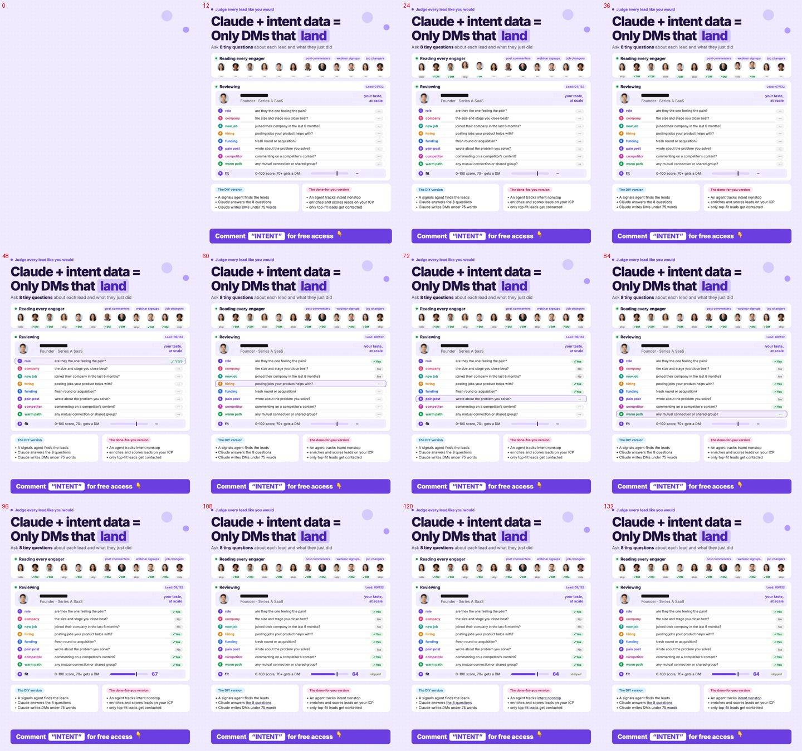
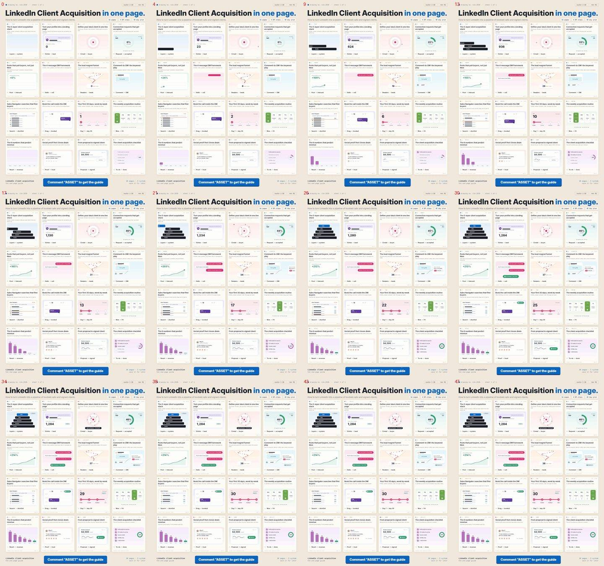

Batch 2 (build 5) for Susanne: board governance and the board's role, 10 posts
Built 2026-11-25 (draft, not rendered on the build machine: render.py and anim.py still to run). 3 carousels (HD39, HD12, HD28), 2 animated (BK08, BK06), 4 single images (HD44 diagram, HD47 table, HD50 illustrated metaphor, HD05 photo-led), 1 text post (PC07). Every post has its own sample, archetype and colour scheme; none reuses a batch 4 look.
- Ideas 1 to 7 rework rejected batch 1 to 3 ideas and the rework pitches HD44 and AV46 (the AV46 three-layer idea is built on BK06).
- Ideas 8 to 10 are new from the knowledge base: machine learning vs generative AI risk (Module 6 S11, S13, S17), UK AI regulation below the waterline (Module 6 S39, S40), the agenda challenge (Module 1 slide 19).
- Proposed facts rows: content/corpus/facts-additions-b5.md (WS-501 to WS-507, BL-501, BL-502).
Animated pieces
A1Animated image (GIF and MP4)CTA: Board Programme
6 questions. Answered before a board approves AI, not after.
- Teaches
- Six questions a board answers before approving AI
- Asset
- Animated scoring checklist: board paper for decision, rows resolve one by one, decision bar opens at six of six (sage dot grid, bottle green)
- Sample
- BK08 · Bharath Krishna Pai · Framework Infographic · Animated scoring checklist · original post
- Facts
- RS-001, RS-002, RS-003, RS-004, RS-005, RS-006, RS-007, RS-008, RS-009, RS-012, BL-015

A2Animated image (GIF and MP4)CTA: Board Programme
AI governance is not one document. It is 3 layers.
- Teaches
- Three layers of AI governance: only the top one is the board's
- Asset
- Animated drawing sheet: mono strip, grid paper, three layer tiles with live micro-illustrations (Prussian blue)
- Sample
- BK06 · Bharath Krishna Pai · Framework Infographic · Animated one-page guide grid · original post
- Facts
- WS-007, WS-006, BL-032

Carousels
C1Carousel, 10 pagesCTA: Board Programme
Same person. Same experience. Two different jobs.
- Teaches
- Executive mindset vs board mindset
- Asset
- Identical full-bleed panel per slide, colour = judgment: ochre executive vs indigo board, giant word, italic verdict, corner arrows
- Sample
- HD39 · Harry Dry · Educational Carousel · Comparison slide deck · original post
- Facts
- WS-502, WS-022, BL-031, WS-006, WS-007, BL-029, BL-017
C2Carousel, 9 pagesCTA: Board Programme
The biggest risk to a fintech is not just running out of money.
- Teaches
- The biggest fintech risk: running out of adult supervision
- Asset
- Real-photo cover with condensed title, then stone-paper slides with window-light shadow, coral marker phrases, cut-paper payoff
- Sample
- HD12 · Harry Dry · Educational Carousel · Step-by-step framework deck · original post
- Facts
- BL-013, BL-021, BL-022, BL-023, BL-046, BL-035, BL-036, BL-038, BL-037
C3Carousel, 9 pagesCTA: Board Programme
Before you say yes to a board seat, open 5 files.
- Teaches
- Due diligence before you join a board: five files
- Asset
- Analogy object per slide: white template, amber highlighter headline, one monoline object drawing per file
- Sample
- HD28 · Harry Dry · Educational Carousel · Checklist / list deck · original post
- Facts
- WS-016, BL-050, BL-501, WS-019, WS-012, BL-033
T
T1Text postCTA: Board Programme
On a private, VC-backed fintech board, you might be the first experienced governance voice in the room.
- Teaches
- The governance voice on a founder-led board
- Asset
- Text-only framework breakdown: setting, the real job, where it helps, one-line close
- Sample
- PC07 · Patrick James Cumming · Text Playbook · Framework or workflow breakdown · original post
- Facts
- WS-019, BL-047, BL-041, WS-013, BL-037, BL-011
Single posts
S1ImageCTA: Board Programme
An independent director's job is part cuddle, part kick.
- Teaches
- The independent director: six jobs, one seat
- Asset
- Radial hub-and-spoke: board table from above, six seats keyed to six cards (muted six-hue board palette)
- Sample
- HD44 · Harry Dry · Framework Infographic · Framework diagram · original post
- Facts
- WS-501, WS-030, BL-026
S2ImageCTA: Board Programme
Machine learning and generative AI do not carry the same risk.
- Teaches
- Machine learning vs generative AI: two risk profiles
- Asset
- Stacked two-panel comparison table, colour as verdict (FT salmon, oxford blue vs claret)
- Sample
- HD47 · Harry Dry · Framework Infographic · Comparison graphic · original post
- Facts
- WS-504, WS-505, WS-507, WS-008, BL-502
S3ImageCTA: Board Programme
The UK has no standalone AI regulation for financial services.
- Teaches
- UK AI rules: no standalone AI law, existing rules apply
- Asset
- Iceberg metaphor: no-AI-law tip above the waterline, PRA and FCA nodes below (mist, deep sea, pale ice)
- Sample
- HD50 · Harry Dry · Illustrated Concept · Metaphor illustration · original post
- Facts
- WS-506, CO-024, BL-034
S4ImageCTA: Board Programme
Information, discussion or decision.
- Teaches
- The agenda challenge: information, discussion or decision
- Asset
- Photo hero, message as an object: agenda sheet over Susanne's consented boardroom scene (paper, ink, cobalt tick)
- Sample
- HD05 · Harry Dry · Quote Card · Styled quote card · original post
- Facts
- WS-503, BL-031